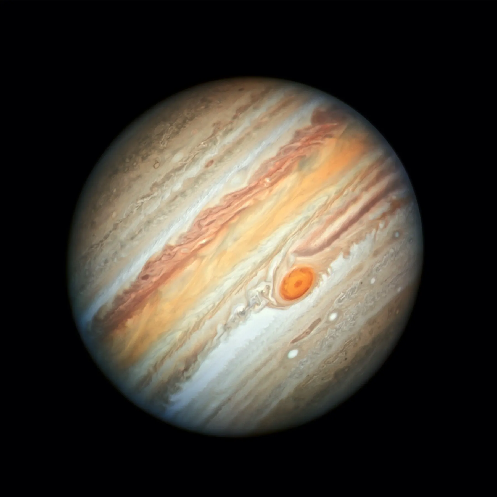

Jupiter

Jupiter is the fifth planet from the Sun and the largest in the Solar System. It is a gas giant with a mass one-thousandth that of the Sun, but two-and-a-half times that of all the other planets in the Solar System combined.
Interesting Facts about Jupiter
- Jupiter has a thick atmosphere composed mainly of hydrogen and helium.
- Jupiter has 79 known moons, including the four large Galilean moons: Io, Europa, Ganymede, and Callisto.
- Jupiter's Great Red Spot is a giant storm that has been raging for hundreds of years.
- Jupiter has a very strong magnetic field, much stronger than Earth's.
- A day on Jupiter (one rotation) takes about 10 hours, making it the fastest spinning planet in the Solar System.
- A year on Jupiter (one orbit around the Sun) takes about 12 Earth years.
Home